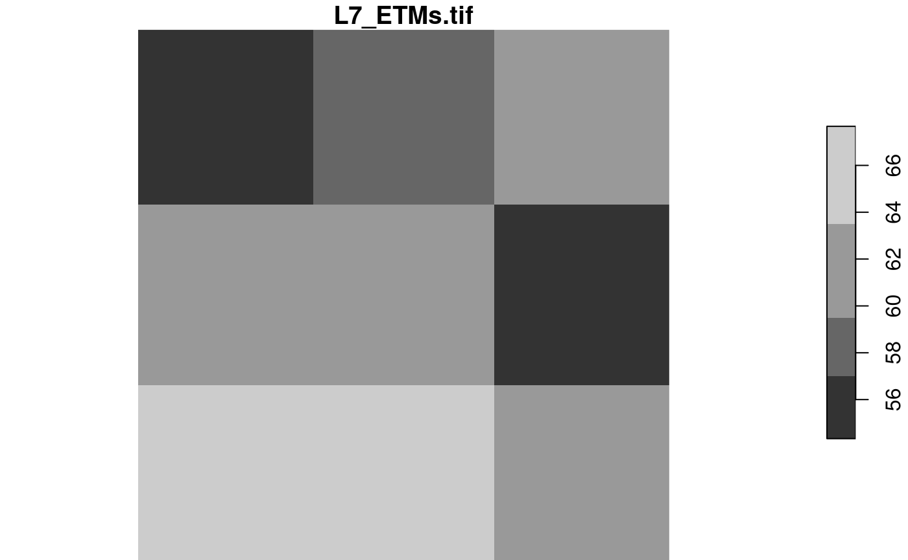
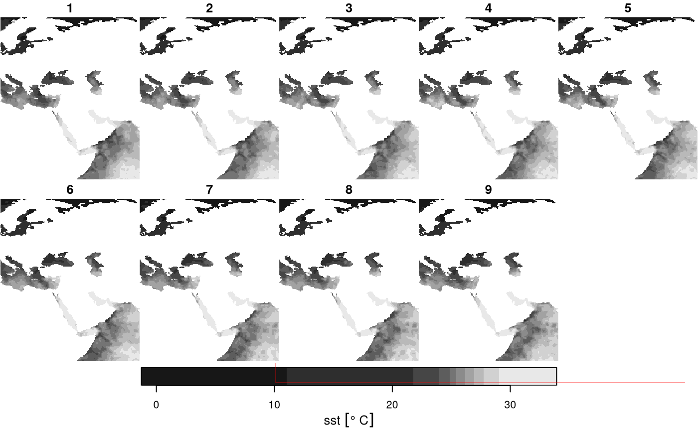
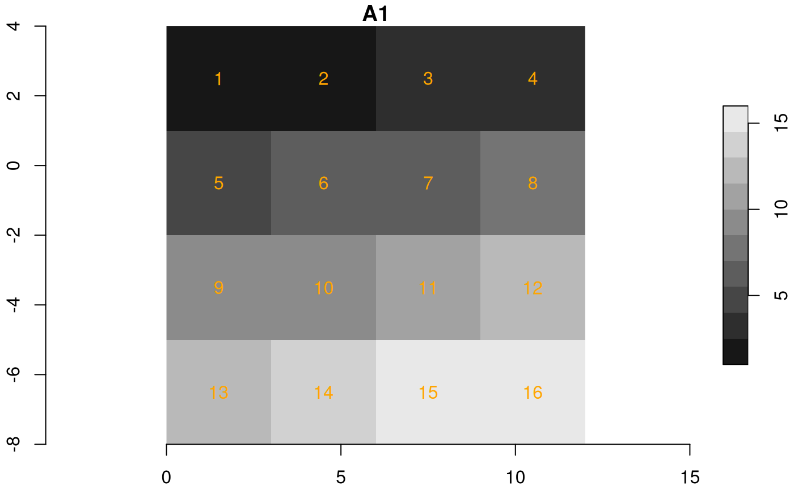
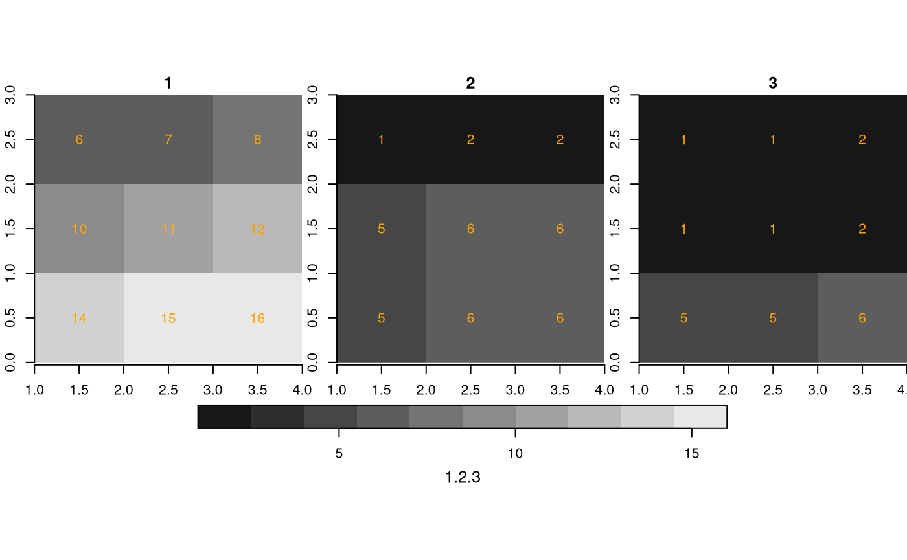
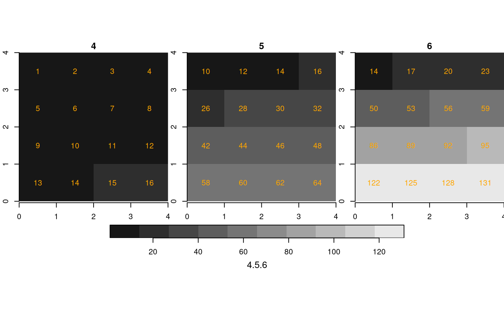
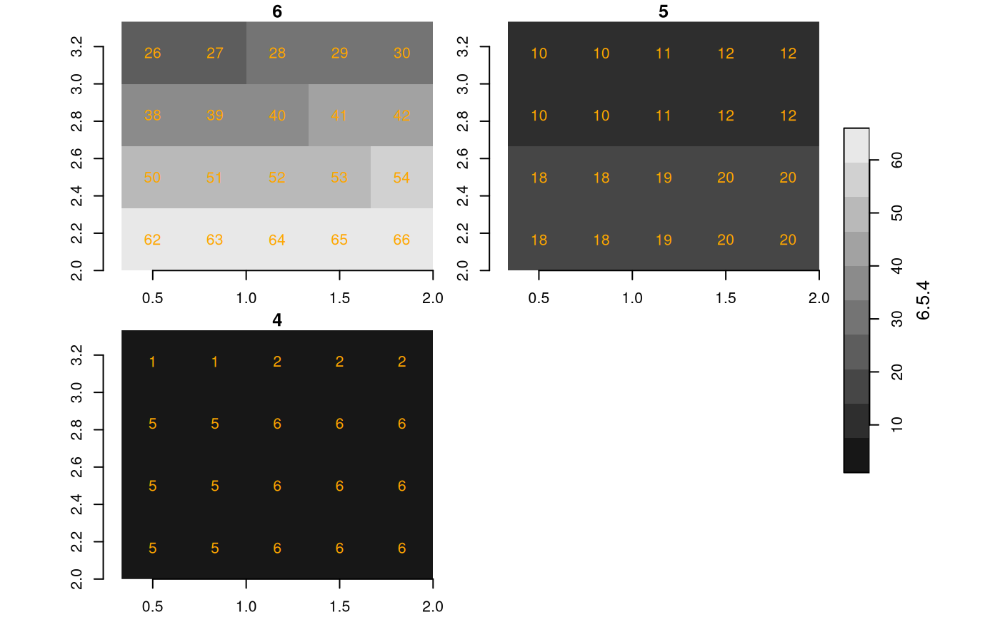

When your imagery or array data easily fits a couple of times in R’s working memory (RAM), consider yourself lucky. This document was not written for you. If your imagery is too large, or for other reasons you want to work with smaller chunks of data than the files in which they come, read on about your options. First, we will discuss the low-level interface for this, then the higher level, using stars proxy objects that delay all reading.
Preamble: the starsdata package
To run all of the examples in this vignette, you must install a package with datasets that are too large (1 Gb) to be held in the stars package. They are in a drat repo, installation is done by
install.packages("starsdata", repos = "http://gis-bigdata.uni-muenster.de", type = "source")
# possibly after: options(timeout = 100)
# or from an alternative repository:
# install.packages("starsdata", repos = "http://pebesma.staff.ifgi.de", type = "source")Reading chunks, change resolution, select bands
read_stars has an argument called RasterIO which controls how a GDAL dataset is being read. By default, all pixels and all bands are read in memory. This can consume a lot of time and require a lot of memory. Remember that your file may be compressed, and that pixel values represented in the file by bytes are converted to 8-byte doubles in R.
The reason for using RasterIO for this is that the parameters we use are directly mapped to the GDAL RasterIO function used (after adapting the 1-based offset index in R to 0-based offset in C++).
Reading a particular chunk
An example of using RasterIO is
library(stars)
## Loading required package: abind
## Loading required package: sf
## Linking to GEOS 3.8.0, GDAL 3.0.4, PROJ 6.3.1; sf_use_s2() is TRUE
tif = system.file("tif/L7_ETMs.tif", package = "stars")
rasterio = list(nXOff = 6, nYOff = 6, nXSize = 100, nYSize = 100, bands = c(1, 3, 4))
(x = read_stars(tif, RasterIO = rasterio))
## stars object with 3 dimensions and 1 attribute
## attribute(s):
## Min. 1st Qu. Median Mean 3rd Qu. Max.
## L7_ETMs.tif 23 54 63 62.05977 73.25 235
## dimension(s):
## from to offset delta refsys point values x/y
## x 6 105 288776 28.5 SIRGAS 2000 / UTM zone 25S FALSE NULL [x]
## y 6 105 9120761 -28.5 SIRGAS 2000 / UTM zone 25S FALSE NULL [y]
## band 1 3 NA NA NA NA NULL
dim(x)
## x y band
## 100 100 3Compare this to
st_dimensions(read_stars(tif))
## from to offset delta refsys point values x/y
## x 1 349 288776 28.5 SIRGAS 2000 / UTM zone 25S FALSE NULL [x]
## y 1 352 9120761 -28.5 SIRGAS 2000 / UTM zone 25S FALSE NULL [y]
## band 1 6 NA NA NA NA NULLand we see that
- the
deltavalues remain the same, - the offset (x/y coordinates of origin) of the grid remain the same
- the
fromandtoreflect the new area, and relate to the newdeltavalues -
dim(x)reflects the new size, and - only three bands were read
Reading at a different resolution
Reading datasets at a lower (but also higher!) resolution can be done by setting nBufXSize and nBufYSize
rasterio = list(nXOff = 6, nYOff = 6, nXSize = 100, nYSize = 100,
nBufXSize = 20, nBufYSize = 20, bands = c(1, 3, 4))
(x = read_stars(tif, RasterIO = rasterio))
## stars object with 3 dimensions and 1 attribute
## attribute(s):
## Min. 1st Qu. Median Mean 3rd Qu. Max.
## L7_ETMs.tif 27 53 63 62.09417 74 151
## dimension(s):
## from to offset delta refsys point values x/y
## x 2 21 288776 142.5 SIRGAS 2000 / UTM zone 25S FALSE NULL [x]
## y 2 21 9120761 -142.5 SIRGAS 2000 / UTM zone 25S FALSE NULL [y]
## band 1 3 NA NA NA NA NULLand we see that in addition:
- the
delta(raster cell size) values have increased a factor 5, becausenBufXSizeandnBufYSizewere set to values a factor 5 smaller thannXSizeandnYSize - the offset coordinates of the grid are still the same
- the
fromandtoreflect the new area, but relate to the newdeltacell size values
We can also read at higher resolution; here we read a 3 x 3 area and blow it up to 100 x 100:
rasterio = list(nXOff = 6, nYOff = 6, nXSize = 3, nYSize = 3,
nBufXSize = 100, nBufYSize = 100, bands = 1)
x = read_stars(tif, RasterIO = rasterio)
dim(x)
## x y
## 100 100
plot(x)
The reason we “see” only three grid cells is that the default sampling method is “nearest neighbour”. We can modify this by
rasterio = list(nXOff = 6, nYOff = 6, nXSize = 3, nYSize = 3,
nBufXSize = 100, nBufYSize = 100, bands = 1, resample = "cubic_spline")
x = read_stars(tif, RasterIO = rasterio)
dim(x)
## x y
## 100 100
plot(x)
The following methods are allowed for parameter resample:
resample |
method used |
|---|---|
nearest_neighbour |
Nearest neighbour (default) |
bilinear |
Bilinear (2x2 kernel) |
cubic |
Cubic Convolution Approximation (4x4 kernel) |
cubic_spline |
Cubic B-Spline Approximation (4x4 kernel) |
lanczos |
Lanczos windowed sinc interpolation (6x6 kernel) |
average |
Average |
mode |
Mode (selects the value which appears most often of all the sampled points) |
Gauss |
Gauss blurring |
All these methods are implemented in GDAL; for what these methods exactly do, we refer to the GDAL documentation or source code.
Stars proxy objects
Stars proxy objects take another approach: upon creation they contain no data at all, but only pointers to where the data can be read. Data is only read when it is needed, and only as much as is needed: if we plot a proxy objects, the data are read at the resolution of pixels on the screen, rather than at the native resolution, so that if we have e.g. a 10000 x 10000 Sentinel 2 (level 1C) image, we can open it by
granule = system.file("sentinel/S2A_MSIL1C_20180220T105051_N0206_R051_T32ULE_20180221T134037.zip", package = "starsdata")
s2 = paste0("SENTINEL2_L1C:/vsizip/", granule, "/S2A_MSIL1C_20180220T105051_N0206_R051_T32ULE_20180221T134037.SAFE/MTD_MSIL1C.xml:10m:EPSG_32632")
(p = read_stars(s2, proxy = TRUE))
## stars_proxy object with 1 attribute in 1 file(s):
## $EPSG_32632
## [1] "[...]/MTD_MSIL1C.xml:10m:EPSG_32632"
##
## dimension(s):
## from to offset delta refsys point values x/y
## x 1 10980 3e+05 10 WGS 84 / UTM zone 32N NA NULL [x]
## y 1 10980 6e+06 -10 WGS 84 / UTM zone 32N NA NULL [y]
## band 1 4 NA NA NA NA B4,...,B8and this happens instantly, because no data is read. When we plot this object,
system.time(plot(p))
## downsample set to 18
## user system elapsed
## 2.708 0.188 2.589This takes only around 1 second, since only those pixels are read that can be seen on the plot. If we read the entire image in memory first, as we would do with
p = read_stars(s2, proxy = FALSE)then only the reading would take over a minute, and require 5 Gb memory.
Methods for stars proxy objects
methods(class = "stars_proxy")
## [1] [ [[<- [<- adrop
## [5] aggregate aperm as.data.frame c
## [9] coerce dim droplevels filter
## [13] hist initialize is.na Math
## [17] merge Ops plot predict
## [21] print show slotsFromS3 split
## [25] st_apply st_as_sf st_as_stars st_crop
## [29] st_dimensions<- st_downsample st_mosaic st_redimension
## [33] st_sample st_set_bbox write_stars
## see '?methods' for accessing help and source codeSelect attributes
We can select attributes as with regular stars objects, by using the first argument to [:
x = c("avhrr-only-v2.19810901.nc",
"avhrr-only-v2.19810902.nc",
"avhrr-only-v2.19810903.nc",
"avhrr-only-v2.19810904.nc",
"avhrr-only-v2.19810905.nc",
"avhrr-only-v2.19810906.nc",
"avhrr-only-v2.19810907.nc",
"avhrr-only-v2.19810908.nc",
"avhrr-only-v2.19810909.nc")
file_list = system.file(paste0("netcdf/", x), package = "starsdata")
y = read_stars(file_list, quiet = TRUE, proxy = TRUE)
names(y)
## [1] "sst" "anom" "err" "ice"
y["sst"]
## stars_proxy object with 1 attribute in 9 file(s):
## $sst
## [1] "[...]/avhrr-only-v2.19810901.nc:sst" "[...]/avhrr-only-v2.19810902.nc:sst"
## [3] "[...]/avhrr-only-v2.19810903.nc:sst" "[...]/avhrr-only-v2.19810904.nc:sst"
## [5] "[...]/avhrr-only-v2.19810905.nc:sst" "[...]/avhrr-only-v2.19810906.nc:sst"
## [7] "[...]/avhrr-only-v2.19810907.nc:sst" "[...]/avhrr-only-v2.19810908.nc:sst"
## [9] "[...]/avhrr-only-v2.19810909.nc:sst"
##
## dimension(s):
## from to offset delta refsys point values x/y
## x 1 1440 0 0.25 NA NA NULL [x]
## y 1 720 90 -0.25 NA NA NULL [y]
## zlev 1 1 0 [m] NA NA NA NULL
## time 1 9 1981-09-01 UTC 1 days POSIXct NA NULLNote that this selection limits the reading from 4 to 1 subdataset from all 9 NetCDF files.
Select an area
Another possibility is to crop, or select a rectangular region based on a spatial object. This can be done by passing a bbox object, or an sf, sfc or stars object from which the bounding box will be taken. An example:
bb = st_bbox(c(xmin = 10.125, ymin = 0.125, xmax = 70.125, ymax = 70.125))
ysub = y[bb]
st_dimensions(ysub)
## from to offset delta refsys point values x/y
## x 41 281 0 0.25 NA NA NULL [x]
## y 80 360 90 -0.25 NA NA NULL [y]
## zlev 1 1 0 [m] NA NA NA NULL
## time 1 9 1981-09-01 UTC 1 days POSIXct NA NULL
class(ysub) # still no data here!!
## [1] "stars_proxy" "stars"
plot(ysub, reset = FALSE) # plot reads the data, at resolution that is relevant
plot(st_as_sfc(bb), add = TRUE, lwd = .5, border = 'red')
Lazy evaluation, changing evaluation order
Some other actions can be carried out on stars_proxy objects, but their effect is delayed until the data are actually needed (plot, write_stars). For instance, range selections on dimensions other than shown above first need data, and can only then be carried out. Such functions are added to the object, in an attribute called call_list:
yy = adrop(y)
yyy = yy[,1:10,1:10,]
class(yyy) # still no data
## [1] "stars_proxy" "stars"
st_dimensions(yyy) # and dimensions not adjusted
## from to offset delta refsys point values x/y
## x 1 1440 0 0.25 NA NA NULL [x]
## y 1 720 90 -0.25 NA NA NULL [y]
## zlev 1 1 0 [m] NA NA NA NULL
## time 1 9 1981-09-01 UTC 1 days POSIXct NA NULL
attr(yyy, "call_list") # the name of object in the call (y) is replaced with x:
## [[1]]
## adrop(x = x, drop = drop)
## attr(,".Environment")
## <environment: 0x55ee1febf7c8>
##
## [[2]]
## x[i = i, 1:10, 1:10, , drop = drop, crop = crop]
## attr(,".Environment")
## <environment: 0x55ee1fe4c848>Doing this allows for optimizing the order in which operations are done. As an example, for st_apply, reading can be done sequentially over the dimensions over which the function is applied:
- If for example a function is applied to each band (such as: compute band quantiles), bands can be read sequentially, and discarded after the quantiles have been computed.
- If a time series function is applied to pixel time series and the result is plotted on a map, the time series function is only evaluated on the pixels actually plotted. This means that e.g. in
the order of evaluation is reversed: plot knows which pixels are going to be shown, and controls how x is downsampled before st_apply is carried out on this subset.
Fetching the data
Fetching the data now involves reading the whole array and then evaluating the call_list on it, sequentially:
(x = st_as_stars(yyy)) # read, adrop, subset
## stars object with 3 dimensions and 4 attributes
## attribute(s):
## Min. 1st Qu. Median Mean 3rd Qu. Max.
## sst [°*C] -1.28 -1.17 -1.11 -1.1163555 -1.06 -0.95
## anom [°*C] 0.48 0.62 0.69 0.6649555 0.72 0.77
## err [°*C] 0.30 0.30 0.30 0.3000000 0.30 0.30
## ice [percent] 0.76 0.79 0.81 0.8062889 0.82 0.85
## dimension(s):
## from to offset delta refsys point values x/y
## x 1 10 0 0.25 NA NA NULL [x]
## y 1 10 90 -0.25 NA NA NULL [y]
## time 1 9 1981-09-01 UTC 1 days POSIXct NA NULLPlotting with changed evaluation order
For the Sentinel 2 data, band 4 represents NIR and band 1 red, so we can compute NDVI by
# S2 10m: band 4: near infrared, band 1: red.
ndvi = function(x) (x[4] - x[1])/(x[4] + x[1])
rm(x)
(s2.ndvi = st_apply(p, c("x", "y"), ndvi))
## stars_proxy object with 1 attribute in 1 file(s):
## $EPSG_32632
## [1] "[...]/MTD_MSIL1C.xml:10m:EPSG_32632"
##
## dimension(s):
## from to offset delta refsys point values x/y
## x 1 10980 3e+05 10 WGS 84 / UTM zone 32N NA NULL [x]
## y 1 10980 6e+06 -10 WGS 84 / UTM zone 32N NA NULL [y]
## band 1 4 NA NA NA NA B4,...,B8
## call_list:
## [[1]]
## st_apply(X = X, MARGIN = MARGIN, FUN = FUN, CLUSTER = CLUSTER,
## PROGRESS = PROGRESS, FUTURE = FUTURE, rename = rename, .fname = .fname)
## attr(,".Environment")
## <environment: 0x55ee1ff53b78>
system.time(plot(s2.ndvi)) # read - compute ndvi - plot
## downsample set to 18
## user system elapsed
## 1.705 0.180 1.552Multi-resolution proxy objects
This sections shows some examples how stars_proxy objects deal with the situation where the different maps have dissimilar resolution. The assumptions here are:
- all maps need to have the same origin coordinates (typically upper-left corner) and CRS.
- the first map determines the “working” resolution, to which e.g. native or downsampled resolutions refer
We’ll create four maps with cells size 1, 2 and 3:
s1 = st_as_stars(matrix(1:16, 4))
s2 = st_as_stars(matrix(1:16, 4))
s3 = st_as_stars(matrix(1:16, 4))
attr(s1, "dimensions")$X1$offset = 0
attr(s1, "dimensions")$X2$offset = 4
attr(s2, "dimensions")$X1$offset = 0
attr(s2, "dimensions")$X2$offset = 4
attr(s3, "dimensions")$X1$offset = 0
attr(s3, "dimensions")$X2$offset = 4
attr(s1, "dimensions")$X1$delta = 1
attr(s1, "dimensions")$X2$delta = -1
attr(s2, "dimensions")$X1$delta = 2
attr(s2, "dimensions")$X2$delta = -2
attr(s3, "dimensions")$X1$delta = 3
attr(s3, "dimensions")$X2$delta = -3
plot(s1, axes = TRUE, text_values = TRUE, text_color = 'orange')
plot(s2, axes = TRUE, text_values = TRUE, text_color = 'orange')
plot(s3, axes = TRUE, text_values = TRUE, text_color = 'orange')
We created three rasters with identical cell values and dimensions, but different cell sizes, and hence extents. If we bind them in a single proxy object, with
fn1 = paste0(tempdir(), .Platform$file.sep, "img1.tif")
fn2 = paste0(tempdir(), .Platform$file.sep, "img2.tif")
fn3 = paste0(tempdir(), .Platform$file.sep, "img3.tif")
write_stars(s1, fn1)
write_stars(s2, fn2)
write_stars(s3, fn3)
(r1 = read_stars(c(fn1, fn2, fn3), proxy = TRUE))
## multi-resolution stars_proxy object with 3 attributes in 3 file(s):
## $img1.tif
## [1] "[...]/img1.tif"
##
## $img2.tif
## [1] "[...]/img2.tif"
##
## $img3.tif
## [1] "[...]/img3.tif"
##
## dimension(s):
## from to offset delta refsys point values x/y
## x 1 4 0 1 NA NA NULL [x]
## y 1 4 4 -1 NA NA NULL [y]We see that multi-resolution is mentioned in the printed summary. When converting this to a stars object, the secondary rasters are resampled to the cellsize + extent of the first:
st_as_stars(r1) %>%
merge() %>%
plot(breaks = "equal", text_values = TRUE, text_color = 'orange', axes = TRUE)
If we do this for a sub-range, defined for the object resolutions, we get:
st_as_stars(r1[,2:4,2:4]) %>%
merge() %>%
plot(breaks = "equal", text_values = TRUE, text_color = 'orange', axes = TRUE)
We now create four maps, all over the same region ([0,4] x [0,4]), with different resolutions (cell size 1, 1/2 and 1/3):
s4 = st_as_stars(matrix(1: 16, 4))
s5 = st_as_stars(matrix(1: 64, 8))
s6 = st_as_stars(matrix(1:144,12))
attr(s4, "dimensions")$X1$offset = 0
attr(s4, "dimensions")$X2$offset = 4
attr(s5, "dimensions")$X1$offset = 0
attr(s5, "dimensions")$X2$offset = 4
attr(s6, "dimensions")$X1$offset = 0
attr(s6, "dimensions")$X2$offset = 4
attr(s4, "dimensions")$X1$delta = 1
attr(s4, "dimensions")$X2$delta = -1
attr(s5, "dimensions")$X1$delta = 1/2
attr(s5, "dimensions")$X2$delta = -1/2
attr(s6, "dimensions")$X1$delta = 1/3
attr(s6, "dimensions")$X2$delta = -1/3
plot(s4, axes = TRUE, text_values = TRUE, text_color = 'orange')
plot(s5, axes = TRUE, text_values = TRUE, text_color = 'orange')
plot(s6, axes = TRUE, text_values = TRUE, text_color = 'orange')
fn4 = paste0(tempdir(), .Platform$file.sep, "img4.tif")
fn5 = paste0(tempdir(), .Platform$file.sep, "img5.tif")
fn6 = paste0(tempdir(), .Platform$file.sep, "img6.tif")
write_stars(s4, fn4)
write_stars(s5, fn5)
write_stars(s6, fn6)
(r2 = read_stars(c(fn4, fn5, fn6), proxy = TRUE))
## multi-resolution stars_proxy object with 3 attributes in 3 file(s):
## $img4.tif
## [1] "[...]/img4.tif"
##
## $img5.tif
## [1] "[...]/img5.tif"
##
## $img6.tif
## [1] "[...]/img6.tif"
##
## dimension(s):
## from to offset delta refsys point values x/y
## x 1 4 0 1 NA NA NULL [x]
## y 1 4 4 -1 NA NA NULL [y]
st_as_stars(r2) %>%
merge() %>%
plot(breaks = "equal", text_values = TRUE, text_color = 'orange', axes = TRUE)
st_as_stars(r2[,2:4,2:4]) %>%
merge() %>%
plot(breaks = "equal", text_values = TRUE, text_color = 'orange', axes = TRUE)
Finally, an example where the first raster has the higher resolution:
(r3 = read_stars(c(fn6, fn5, fn4), proxy = TRUE))
## multi-resolution stars_proxy object with 3 attributes in 3 file(s):
## $img6.tif
## [1] "[...]/img6.tif"
##
## $img5.tif
## [1] "[...]/img5.tif"
##
## $img4.tif
## [1] "[...]/img4.tif"
##
## dimension(s):
## from to offset delta refsys point values x/y
## x 1 12 0 0.333333 NA NA NULL [x]
## y 1 12 4 -0.333333 NA NA NULL [y]
st_as_stars(r3) %>%
merge() %>%
plot(breaks = "equal", text_values = TRUE, text_color = 'orange', axes = TRUE)
st_as_stars(r3[,2:6,3:6]) %>%
merge() %>%
plot(breaks = "equal", text_values = TRUE, text_color = 'orange', axes = TRUE)